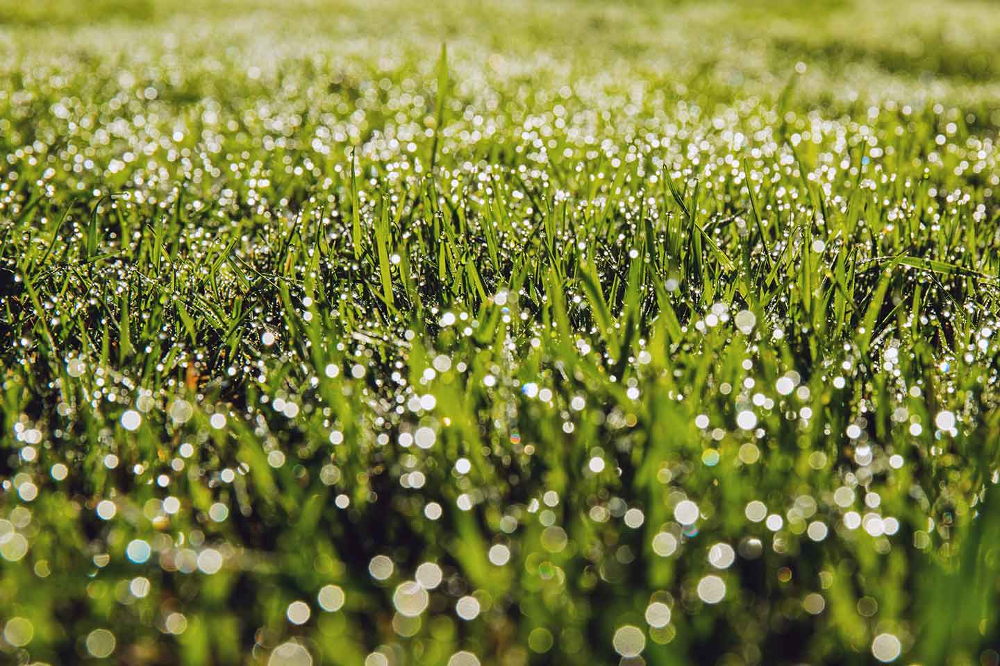

8 choses à ne jamais faire à votre gazon
Conseils
Entretien du jardin
Gazon
Par Olivier Ribera
À quel moment de la journée choisir plutôt de tondre ? Et comment arroser votre pelouse pour garder celle-ci en bonne santé ? Quel usage faire des herbicides ou pesticides ?... Retrouvez nos conseils clés listés ici en 8 choses que vous ne devriez jamais faire subir à votre gazon.
1. Ne jamais tondre trop court
Couper votre gazon trop court, ou le scalper, endommage le système racinaire de l'herbe. On considère que l'herbe est scalpée lorsque les deux tiers (ou plus) est retirée au moment de la tonte. Différentes études ont montré qu'une tonte à une bonne hauteur laisse les racines se développer plus profondément, ce qui leur permet d'attraper plus d'humidité et de nutriments. Votre pelouse sera ainsi plus épaisse et plus résistante.
Gardez donc toujours bien en tête au moment de votre tonte de ne jamais couper plus d'un tiers de la hauteur de votre herbe. Non seulement un gazon coupé un peu haut poussera mieux qu'un gazon trop court, mais il sera également mieux en mesure de lutter contre les mauvaises herbes. Une herbe non coupée trop court abritera aussi mieux le sol, en protégeant les racines.
2. Ne vous débarrassez pas des déchets de tonte
La masse d'herbe coupée que vous accumulez au cours d'une tonte constitue une source précieuse de déchets verts et de matières organiques qu'il serait bien dommage de perdre alors qu'il pourra constituer une excellent matériau de paillage au potager ou sur la terre au pied de vos massifs, des arbustes et des haies. Ce paillage, abondant et gratuit, fertilisera le sol et réduira l'évaporation ce qui permettra d'économiser l'arrosage. Il freinera également le développement des mauvaises herbes. Afin toutefois de limiter les risques de fermentation qui pourrait brûler les racines ou tiges de vos plantes les plus fragiles, épandez ces déchets de tonte en une couche de 2 à 3 cm d'épaisseur maximum. Pour une utilisation en couches plus épaisses, stockez ces mêmes déchets en un tas dans un coin ensoleillé de votre jardin que vous aérerez et retournerez pendant quelques jours, le temps que l'herbe soit sèche et jaunie.
Vos déchets de tonte, très humides et riches en azote, pourront également être destinés au recyclage au compost, en veillant néanmoins à les mélanger à des déchets durs, bruns et secs riches en carbone (feuilles mortes, paille, cartons découpés en morceaux, branchages, papier...). Pour un bon rapport azote/carbone, vous pourrez ainsi ajouter un volume de déchets bruns à un à deux volumes au maximum de déchets de tonte.
3. Ne tondez jamais un gazon humide
Le meilleur moment pour tondre est quand l'herbe est sèche. L'humidité causée par la pluie ou la rosée du matin fait courber les brins de l'herbe, rendant difficile une coupe droite. Vous risquez également de glisser sur l'herbe trop humide et les déchets de tonte auront tendance à s'accumuler et se coller sur les lames de votre tondeuse. De plus, une herbe humide et fraîchement coupée est plus sensible aux organismes porteurs de maladies qui risqueront alors de se développer.
Toutefois, surtout s'il pleut beaucoup et pendant longtemps, il peut bien sûr arriver que vous deviez tondre un gazon mouillé. Car il sera toujours préférable de tondre malgré cela, plutôt que de laisser votre gazon pousser trop haut en attendant qu'il soit sec. À l'inverse, ne tondez pas votre gazon pendant une période de sécheresse, car alors la tonte fragilisera l'herbe.
4. Ne fertilisez pas excessivement
La fertilisation de votre gazon doit être envisagée de manière étudiée et raisonnable, au risque de transformer une belle pelouse luxuriante en un désert lunaire. Voilà pourquoi il ne faudra jamais surfertiliser ou fertiliser au mauvais moment. Considérez l'azote, élément principal de la plupart des engrais : épandu trop largement, votre gazon risque de brûler en jaunissant. Certains engrais azotés, à effet dit "immédiat" vont se libérer rapidement dans le sol alors que d'autres au contraire se libèreront lentement et progressivement. Assurez-vous toujours d'opter pour le bon engrais adapté aux besoins de votre gazon.
Les engrais contiennent également des sels qui, en petites quantités, aideront votre gazon à se développer. Mais un trop grand apport de sel peut abîmer les racines et finira par tuer l'herbe. Dans tous les cas, la fertilisation de votre gazon ne devra intervenir que deux fois seulement par an, au printemps et à l'automne. Dans le cas d'un gazon ancien dont le sol avec la temps sera devenu trop acide, il pourra être également utile d'épandre de la chaux magnésienne, riche en calcium et en magnésium, afin de rétablir son pH et d'aujouter les minéraux essentiels à son équilibre.
5. Ne tondez pas avec une lame de coupe émoussée
Vous avez remarqué que des touffes d'herbes sont restées alors que vous venez de passer votre tondeuse ? Il se peut assez vraisemblablement que la lame de coupe soit émoussée, celle-ci s'étant usée au fil du temps et devant donc être affûtée ou remplacée. Une lame tranchante est importante pour la bonne santé de votre gazon -- et donc pour son apparence. Une herbe qui est coupée réduit nettement sa perte en eau et accroît la photosyntèse. Vous vous rappelez sûrement que la photosynthèse est le processus par lequel les plantes transforment le dioxyde de carbone et l'eau en hydrates de carbone et oxygène, en utilisant l'énergie lumineuse contenue dans la chlorophylle.
Vous saurez que la lame de coupe de votre tondeuse a besoin d'être affûtée ou remplacée si vous découvrez après avoir passé la tondeuse un tissu blanc sortir des brins d'herbes fraîchement coupés, une tonte réalisée avec une lame émoussée entraînant une déficience en éléments nutritifs qui fragilisera votre gazon en pleine croissance. Nous vous conseillons d'affûter la lame de coupe de votre tondeuse deux fois par an.
6. N'utilisez pas de poisons
En tant que spécialiste du jardin et du paysage, nous recommandons de ne pas utiliser d'herbicides pour lutter contre les mauvaises herbes ou des pesticides pour tuer les insectes. Car ces produits chimiques se retrouvent ensuite dans l'environnement et restreignent la circulation de l'eau dans les sols. Les pesticides peuvent nuire à quantité d'insectes, micro-organismes et vers de terre qui pourtant aident à maintenir un gazon en bonne santé.
Si vous avez besoin de contrôler les mauvaises herbes, choisissez à chaque fois de le faire d'une façon respectueuse de l'environnement. Pour cela une tonte régulière est essentielle. Couper les têtes de pissenlits avant qu'ils aient une chance de laisser se répandre leurs graines est un bon moyen de lutter contre les mauvaises herbes. Et si malgré tout, vous avez besoin d'utiliser un désherbant, choisissez-en un « naturel ».
7. Ne tondez pas à midi
Une tonte au bon moment de la journée, spécialement pendant l'été, aidera votre gazon à rester vert. Comme nous l'avons écrit plus haut, ne tondez pas le matin quand l'herbe est humide. Attendez que l'herbe soit sèche.
Une fois votre gazon sec, tondez en fin d'après-midi et en début de soirée. D'une part, vous-même souffrirez moins, mais également votre gazon. Et encore un conseil : n'arrosez jamais votre gazon quand le soleil est au plus fort et au plus chaud, au risque que l'eau apportée s'évapore avant que l'herbe ait pu s'en nourrir.
8. N'arrosez pas trop souvent
Arroser quelques minutes par jour n'est pas une bonne idée. Il se crée alors un cercle vicieux où l'arrosage fréquent crée un système racinaire peu profond d'une herbe qui alors aura besoin d'être arrosée en permanence pour réussir à rester en (à peu près) bonne santé.
En bref, arrosez tôt le matin avant que le soleil ne s'installe ou en toute fin de soirée.
Vous avez une question ?
L'entretien du gazon figure parmi toute notre gamme de services d'entretien de jardin (tailles de massifs et de haies, d'arbres fruitiers et arbustes, entretien et fleurissement des zones de plantations...). N'hésitez pas à nous demander conseil en nous contactant au 06 66 33 11 33 ou via notre page de contact.
Partager avec vos amis
Article recommandé
L'entretien du gazon au printemps
Le printemps est une saison clé pour l'entretien de votre gazon. Les plantes sont alors en pleine croissance, ce qui est idéal pour aider votre pelouse à se remettre de l'hiver. (...)
Lire l'articleRecevez de nos nouvelles !
Inscrivez-vous dès maintenant et recevez nos actualités et offres de services exclusives, ainsi que nos derniers articles et conseils d'aménagements et d'entretien de jardin.